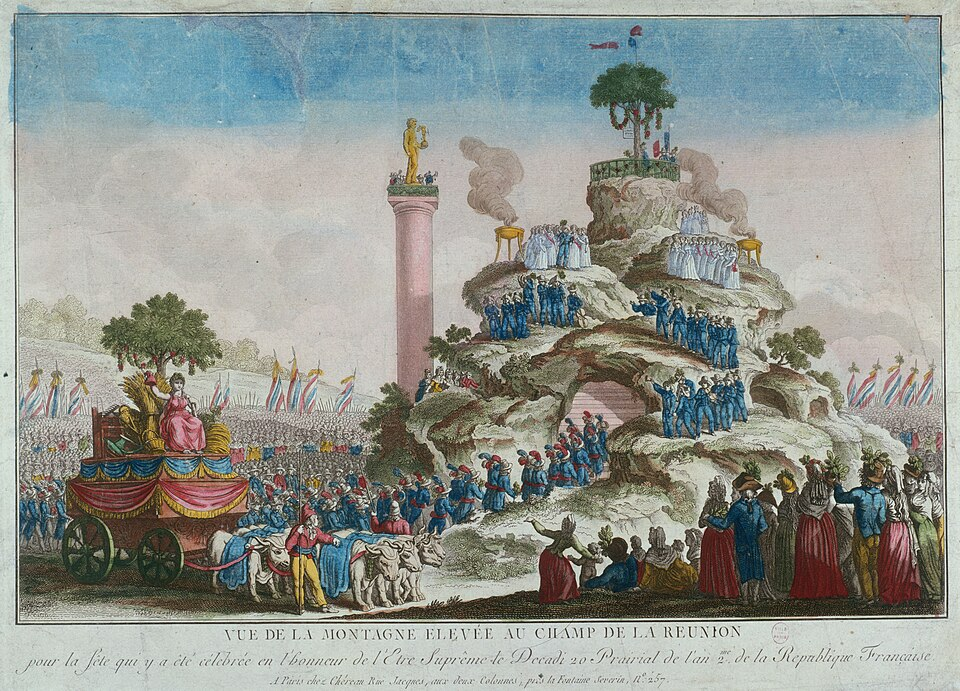
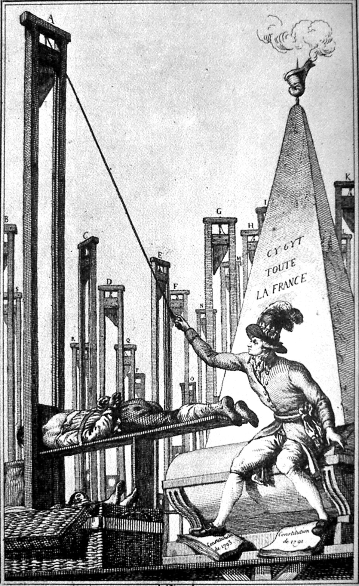
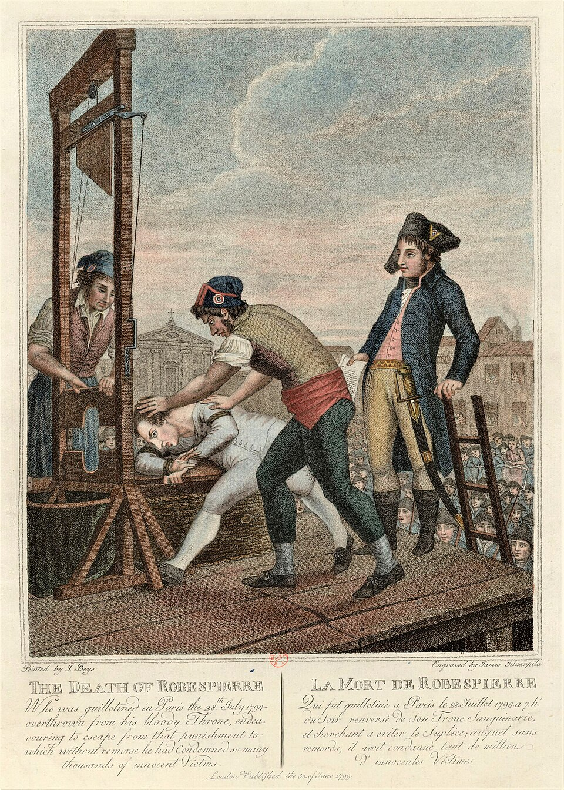

⏱️ 10초 카드 · 프랑스혁명·공포정치 (1758~1794)
부패할 수 없는 자공안위원회공포정치테르미도르
여는 질문 — '확신에 찬 선의'가 위험해지는 순간의 신호는 무엇일까?
이름
한국어로베스피에르
원어Maximilien Robespierre
실제 발음막시밀리앵 로베스피에르
로마자Maximilien Robespierre
영어권Maximilien Robespierre
별칭부패할 수 없는 자
왜 이 사람인가
도감에서 가장 서늘한 경고예요. 사형제 폐지를 외치던 청렴한 변호사가 단두대의 설계자가 되기까지 — '나는 옳다'가 '그러니 절차는 생략한다'로 넘어가는 순간을 감시하라고 말하죠. 악인의 이야기가 아니라서 더 무거워요.
생애
아라스의 가난한 변호사로, 약자의 사건을 도맡고 사형제 폐지를 주장하던 청렴의 화신이었어요 — '부패할 수 없는 자'라는 별명이 빈말이 아니었죠. 혁명 초기엔 보통선거와 노예제 폐지, 사형 폐지를 가장 앞서 외친 사람이 그였어요.
그러나 전쟁·내전·음모의 1793년, 그는 공안위원회의 중심에서 '혁명을 지키기 위한' 공포를 정당화해 가요 — '미덕 없는 공포는 재앙이지만, 공포 없는 미덕은 무력하다.' 혐의자법, 그리고 변호인도 증인도 없앤 프레리알 법까지.
1794년 7월(테르미도르), 다음 차례를 직감한 동료들에게 체포돼 — 자신이 만든 절차 없는 재판으로 하루 만에 단두대에 섰어요. 36세. 그의 생애는 '악인'의 이야기가 아니라서 더 무겁습니다 — 절차와 견제 없는 선의가 어디까지 가는지의 기록이니까요.
자료로 보기 — 유묵·사진



남긴 말
“사형 제도는 살인이 죄임을 가르치려다, 도리어 국가가 살인을 저지르게 만든다.”
훗날 단두대를 정당화하는 그가, 한때는 누구보다 앞서 사형제 폐지를 외쳤다는 아이러니를 보여 줘요. · 출처: 로베스피에르, 사형제 폐지 연설(1791)
“미덕 없는 공포는 재앙이지만, 공포 없는 미덕은 무력하다.”
공포정치를 정당화한 가장 유명한 말이에요. '선한 목적이 수단을 정당화한다'는 논리의 위험을 압축하죠. · 출처: 로베스피에르, 국민공회 연설(1794)
연표
- 1758아라스에서 출생
- 1789삼부회 대표 — 민중의 변호인
- 1793공안위원회 — 공포정치의 중심으로
- 1794.7테르미도르 — 처형 (36세)
지방 변호사에서 단두대까지
북부 지방의 청렴한 변호사가 혁명의 중심으로 올라갔다가, 자신이 세운 칼날 아래로 떨어지기까지의 짧고 가파른 길이에요.
현재 지도 위 표시예요. 지방에서 파리로 올라간 5년의 길이, 혁명의 이상과 공포를 모두 담고 있어요.
빛과 그림자빛과 그림자가 분리되지 않는 인물 — 같은 확신이 민중 옹호와 단두대를 모두 낳았어요. '나는 옳다'가 '그러니 절차는 생략한다'로 넘어가는 순간을 감시하라는, 도감 전체에서 가장 서늘한 경고예요.
더 깊이 (고등·일반)
'부패할 수 없는 자'
아라스의 가난한 변호사로, 약자의 사건을 도맡았어요. 뇌물도 사치도 모르는 청렴 — '부패할 수 없는 자'라는 별명이 빈말이 아니었죠.
혁명 초기, 가장 급진적인 인권
보통선거, 노예제 폐지, 사형제 폐지 — 혁명 초기에 이것들을 가장 앞서 외친 사람이 바로 그였어요. 시작점은 분명 '약자의 편'이었죠.
1793, 공포의 정당화
전쟁·내전·음모가 겹친 위기의 1793년, 그는 공안위원회의 중심에서 '혁명을 지키기 위한' 공포를 정당화하기 시작해요. 비상사태가 원칙을 하나씩 밀어냈죠.
절차가 사라지다
혐의자법, 그리고 변호인도 증인도 없앤 프레리알 법까지 — 의심만으로 단두대에 세울 수 있게 됐어요. '적'의 범위는 계속 넓어졌고요.
테르미도르 — 자기 칼에 베이다
1794년 7월, 다음 차례를 직감한 동료들에게 체포된 그는, 자신이 만든 '절차 없는 재판'으로 하루 만에 단두대에 섰어요. 36세. 절차와 견제 없는 선의가 어디까지 가는지의 기록이에요.
사람의 그물 — 함께 읽을 인물
이 인물이 나오는 이야기
더 공부하기 — 여기서 출발하세요
📚 책으로
- 로베스피에르 — 혁명의 탄생 ↗'선의가 어떻게 공포가 되는가'를 추적한 전기.
- 프랑스혁명사 ↗공포정치를 그 시대 전체 흐름 속에서 보기.
📜 1차 사료
- '미덕과 공포' 연설(1794) ↗공포정치를 정당화한 그의 핵심 연설 원문.
🎬 영상으로
- 다큐 — 로베스피에르, 공포의 설계자 ↗ · The People Profiles이상주의자가 공포정치로 간 과정을 다룬 영어 다큐.
📍 가 볼 곳
- 아라스 (프랑스 북부)가난한 변호사로 일하던 고향.
- 콩코르드 광장 (파리)혁명기 단두대가 놓였던 곳.
- 카르나발레 박물관 (파리)프랑스혁명 유물·초상을 모은 곳.